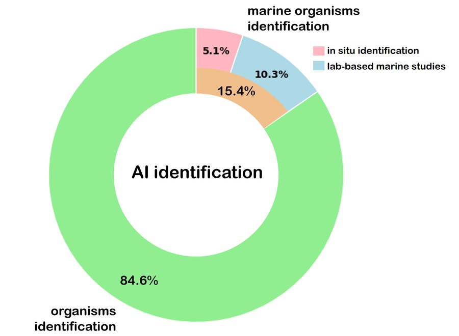
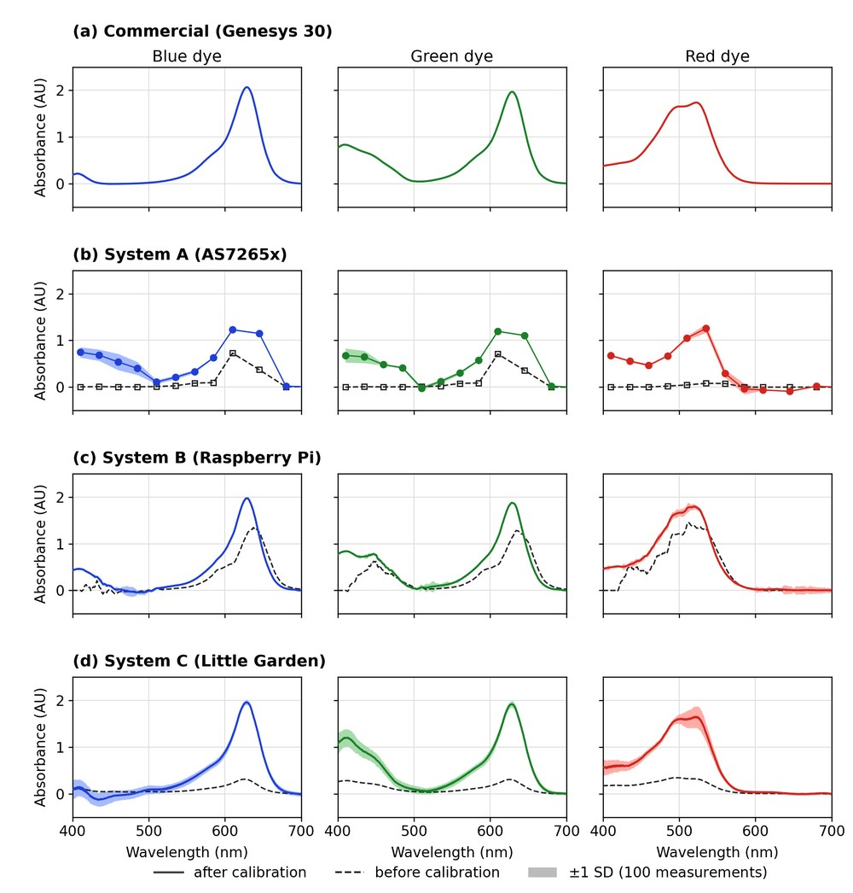
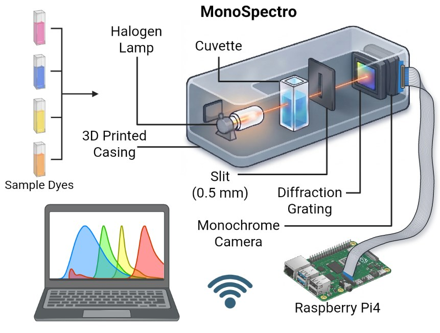
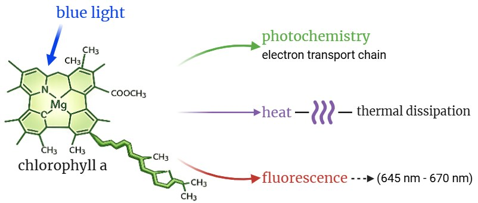
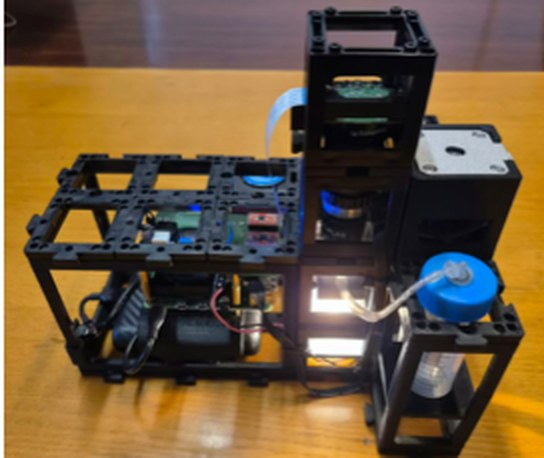
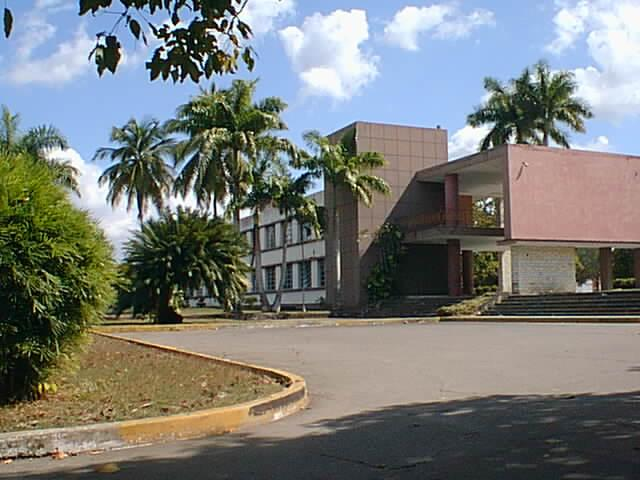
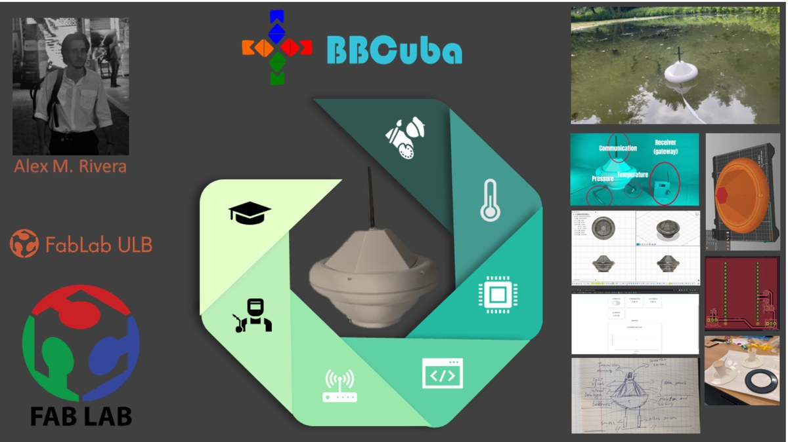
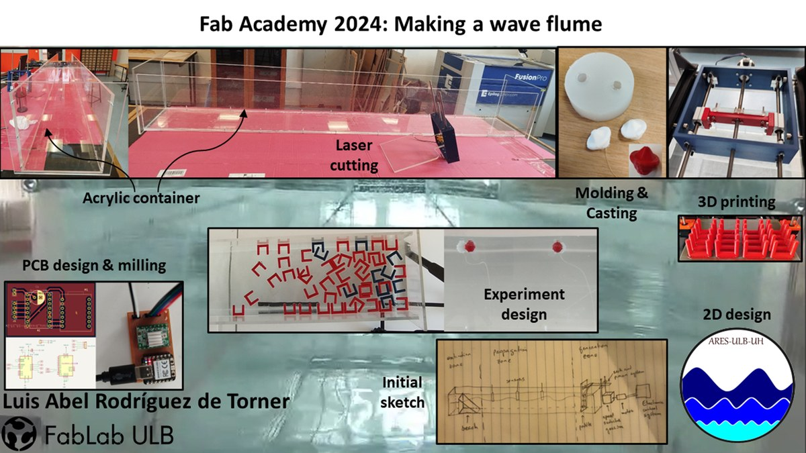

In review
Microorganisms as Indicator of Marine Pollution: Challenges for in situ monitoring
Submitted to Environmental Monitoring and Assessment in April 2026. Under peer review since June 14, 2026.
 CubanWaterLab
ESENFR
CubanWaterLab
ESENFR

Submitted to Environmental Monitoring and Assessment in April 2026. Under peer review since June 14, 2026.

Submitted to Review of Scientific Instruments in October 2026.

In preparation for IEEE Sensors Letters · 2026.

2026.

2026.
Accepted for the International Seminar “Intersectionality, Equity and Social Policies”. To be presented in November 2026.

Presented at the 5th UCLV International Scientific Convention (“Communities 2025” workshop) · October 20–24, 2025.
The repositories and technical portfolios behind CubanWaterLab's experimental work.

Portfolio from the international digital-fabrication course at the Université Libre de Bruxelles.
View portfolio →
Portfolio from the international digital-fabrication course at the Université Libre de Bruxelles.
View portfolio →
Portfolio for the course "How To Make (almost) Any Experiments Using Digital Fabrication," ULB.
View portfolio →
Software for a low-cost portable spectrophotometer (AS7265x sensor + ESP32), with a graphical interface and CSV export.
View repository →
DIY optical spectrometer with a Raspberry Pi camera, polynomial-regression calibration, and a waterfall mode for real-time spectral tracking.
View repository →